از ورود به برنامه تا گزارشگیری؛ ویژه همه نقشهای کاربری
ویرایش: آبان ۱۴۰۵این راهنما جایگزین راهنمای نسخههای قبلی است
فهرست مطالب
۱. معرفی سیستم
۲. شروع کار
۲.۱ ورود و خروج
۲.۲ بهروزرسانی خودکار برنامه
۳. آشنایی با محیط برنامه
۳.۱ منوی کناری
۳.۲ نوار بالا
۳.۳ سربرگ صفحه و دکمهها
۳.۴ جدولها، برچسب وضعیت و فیلترها
۳.۵ پیامها و اعلانها
۳.۶ خطاهای فرم
۳.۷ جستجوی سریع (Ctrl+K)
۴. نقشها و سطح دسترسی
۵. راهنمای صفحهها
۵.۱ داشبورد
۵.۲ تجهیزات
۵.۳ برنامه PM
۵.۴ دستور کارها
۵.۵ صدور حکم درخواست تعمیرات
۵.۶ بازرسیها
۵.۷ قطعات یدکی
۵.۸ ساعت کار ماشین
۵.۹ تحلیل و گزارشات
۵.۱۰ مدیریت پرسنل و دپارتمانها
۵.۱۱ مدیریت کاربران و نقشها
۵.۱۲ لاگ فعالیت
۶. فرایندهای متداول گامبهگام
۷. خروجی PDF و Excel
۸. کلیدهای میانبر
۹. عیبیابی و پرسشهای متداول
پیوست: نکات واحد فناوری اطلاعات
۱. معرفی سیستم
PM System نرمافزار نگهداری و تعمیرات (نت) شرکت گلا است. همه کارهای واحد نت در یک برنامه فارسی و راستبهچپ انجام میشود و دادهها روی سرور SQL Server شرکت نگهداری میشوند.
کارهایی که با این سیستم انجام میدهید:
شناسنامه تجهیزات: ثبت کد، نام، دستهبندی، محل نصب و وضعیت هر دستگاه.
نگهداری پیشگیرانه (PM): تعریف برنامههای دورهای. دستور کار سررسیدها بهصورت خودکار ساخته میشود.
دستور کار: ثبت، تأیید، شروع، گزارش اتمام و تأیید نهایی کارهای اصلاحی، پیشگیرانه، بازرسی و اضطراری.
حکم درخواست تعمیرات: ثبت درخواست واحدهای متقاضی و ثبت اتمام کار با پرسنل واقعی انجامدهنده.
بازرسیها: قالبهای چکلیست و ثبت نتیجه هر بازرسی.
انبار قطعات یدکی: موجودی، ورود و خروج، و هشدار کمبود.
ساعت کار ماشین: برگه روزانه شیفتها، توقفها و علت آنها.
گزارشها: شاخصهای استاندارد نت (MTBF، MTTR، دسترسپذیری، OEE و …)، هزینهها، خرابیها و عملکرد پرسنل، با خروجی Excel و PDF.
تاریخها: همه تاریخهای برنامه شمسی و به وقت تهران هستند. ساعت از ساعت واقعی ایران گرفته میشود، پس اگر ساعت ویندوز کامپیوتر اشتباه باشد (مثلاً بهخاطر قانون قدیمی ساعت تابستانی) تاریخ و ساعت ثبتشده درست میماند.
۲. شروع کار
۲.۱ ورود و خروج
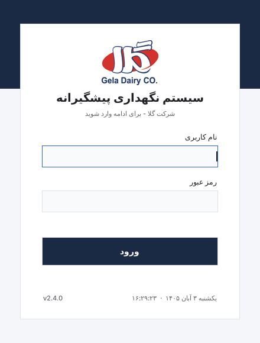
پنجره ورود
برنامه را از آیکون PM System روی دسکتاپ یا منوی استارت باز کنید.
نام کاربری و رمز عبور خود را وارد کنید و «ورود» را بزنید. رمز عبور را مدیر سیستم به شما میدهد.
برای خروج، پایین منوی کناری روی خروج از سیستم بزنید. پنجره ورود دوباره باز میشود و نفر بعدی میتواند وارد شود.
امنیت: رمز خود را به دیگران ندهید و پیش از ترک کامپیوتر از سیستم خارج شوید. همه کارهای ثبتشده با نام کاربری شما در «لاگ فعالیت» ذخیره میشوند.
۲.۲ بهروزرسانی خودکار برنامه
نسخههای جدید روی سرور شرکت قرار میگیرند و برنامه خودش آنها را نصب میکند. لازم نیست کاری انجام دهید:
هنگام باز کردن برنامه: پنجره کوچک «در حال بررسی نسخه جدید…» چند ثانیه نمایش داده میشود. اگر نسخه جدیدی باشد، پنجره «در حال بهروزرسانی سیستم PM» مراحل دریافت و نصب را نشان میدهد و بعد از نصب، برنامه دوباره باز میشود. در این مدت کامپیوتر را خاموش نکنید.
وقتی برنامه باز است: اگر نسخه جدید آماده نصب شود، پیامی با شمارش معکوس دو دقیقهای نمایش داده میشود. کار در دست را ذخیره کنید. برنامه برای نصب بسته میشود و دوباره باز میشود.
اگر بهروزرسانی ناموفق باشد: پیام هشدار در گوشه پنجره نمایش داده میشود. موضوع را به واحد فناوری اطلاعات اطلاع دهید.
آزمایش بهروزرسانی: در منوی استارت، داخل پوشه برنامه، میانبر Test automatic updates وجود دارد. واحد فناوری اطلاعات با آن درستی بهروزرسانی خودکار روی هر کامپیوتر را آزمایش میکند (به پیوست مراجعه کنید).
۳. آشنایی با محیط برنامه
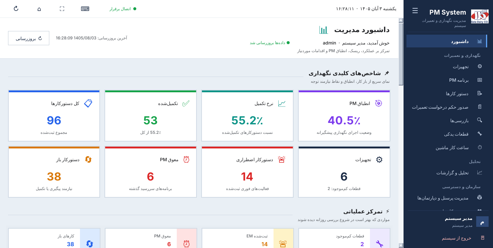
پنجره اصلی: منوی کناری در سمت راست، نوار بالا و محتوای صفحه
۳.۱ منوی کناری
صفحهها در سه گروه آمدهاند: نگهداری و تعمیرات، تحلیل و سازمان و دسترسی. هر کاربر فقط صفحههایی را میبیند که نقشش اجازه میدهد.
صفحه فعال با رنگ روشنتر و نوار آبی در لبه راست مشخص میشود.
با دکمه ☰ بالای منو، منو جمع میشود و فقط آیکونها باقی میمانند. با زدن دوباره، منو باز میشود.
نام و نقش شما و دکمه خروج از سیستم همیشه پایین منو قرار دارند.
با Ctrl+1 تا Ctrl+9 به صفحه اول تا نهم منو میروید.
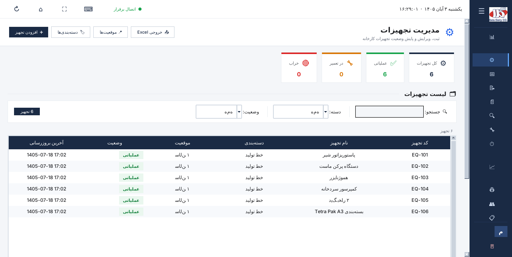
منوی جمعشده: فقط آیکونها
۳.۲ نوار بالا
از راست به چپ: تاریخ و ساعت شمسی تهران، وضعیت اتصال به سرور، و دکمههای راهنمای میانبرها، تمامصفحه، رفتن به داشبورد و بروزرسانی صفحه فعلی.
۳.۳ سربرگ صفحه و دکمهها
هر صفحه یک سربرگ سفید دارد. عنوان و توضیح صفحه در سمت راست و دکمههای کار در سمت چپ آن هستند. رنگ دکمهها اهمیت آنها را نشان میدهد:
ظاهر دکمه
کاربرد
دکمه اصلی (سرمهای)
کار اصلی صفحه، مثل «افزودن تجهیز» یا «دستور کار». در هر صفحه فقط یک دکمه اصلی وجود دارد.
دکمه حاشیهدار
کارهای جانبی، مثل خروجی Excel، چاپ PDF و بروزرسانی.
دکمه قرمز
کار اضطراری، مثل «دستور کار اضطراری».
حاشیه قرمز
حذف. پیش از اجرا همیشه تأیید گرفته میشود.
دکمههایی که نقش شما اجازه استفاده از آنها را نمیدهد نمایش داده نمیشوند.
۳.۴ جدولها، برچسب وضعیت و فیلترها
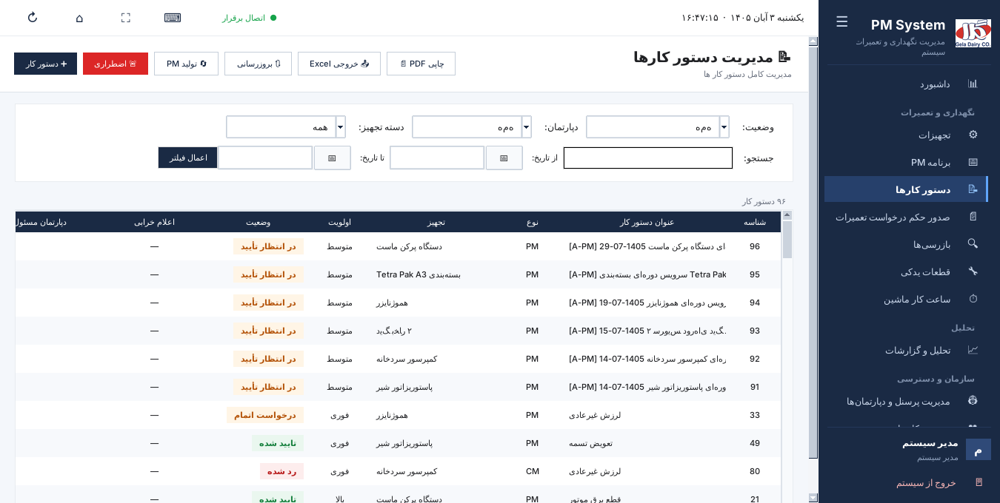
جدول دستور کارها: برچسب رنگی وضعیت، شمارنده ردیفها و فیلترها
برچسب وضعیت: ستون «وضعیت» با برچسب رنگی نمایش داده میشود:
سبز انجامشده یا سالم،
نارنجی در انتظار یا در جریان،
قرمز رد شده، معوق یا خراب،
آبی باز یا جدید.
شمارنده و فیلترهای فعال: بالای هر جدول تعداد ردیفها نمایش داده میشود، مثلاً «۵ از ۹۶ دستور کار». فیلترهای فعال کنار آن به شکل برچسب آمدهاند. با زدن ✕ روی هر برچسب، همان فیلتر برداشته میشود و با «پاک کردن همه» همه فیلترها.
جدول خالی: اگر با فیلترهای فعلی ردیفی پیدا نشود، وسط جدول پیام «موردی برای نمایش وجود ندارد» و دکمه «پاک کردن فیلترها» نمایش داده میشود. هنگام دریافت اطلاعات از سرور، عبارت «در حال بارگذاری…» دیده میشود.
مرتبسازی: با کلیک روی عنوان هر ستون، جدول بر اساس آن ستون مرتب میشود و با کلیک دوباره، ترتیب برعکس میشود.
کارهای هر ردیف: با دابلکلیک یا Enter ردیف باز یا ویرایش میشود. کلیک راست، فهرست کارهای مجاز آن ردیف را باز میکند.
۳.۵ پیامها و اعلانها
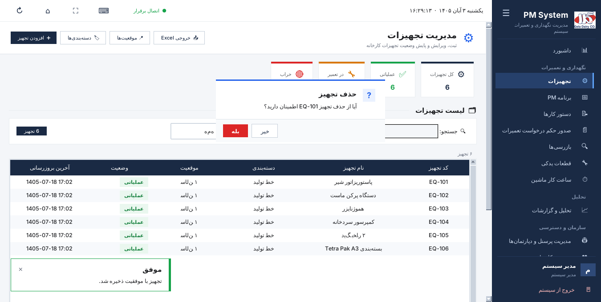
پنجره تأیید حذف (وسط) و اعلان موفقیت (پایین سمت چپ)
اعلان موفقیت: پیامهای کوتاه، مثل «با موفقیت ذخیره شد»، چند ثانیه در گوشه پایین سمت چپ نمایش داده میشوند و خودشان بسته میشوند. لازم نیست «تأیید» را بزنید.
پرسش و هشدار: برای کارهای مهم، مثل حذف، پنجرهای با دکمههای «بله» و «خیر» باز میشود. دکمه قرمز یعنی کار برگشتپذیر نیست. Enter دکمه انتخابشده را اجرا میکند و Esc یعنی «خیر» یا «انصراف».
یادآوری دستور کارهای ناتمام: هر چند وقت یک بار، اعلانی تعداد دستور کارهای «در انتظار» و «در حال انجام» را یادآوری میکند. برای تکنسین فقط کارهای خودش شمرده میشود.
۳.۶ خطاهای فرم
اگر فیلد لازمی خالی بماند یا مقدارش نادرست باشد، پس از زدن «ذخیره» دور همان فیلد قرمز میشود و توضیح کوتاهی زیر آن نمایش داده میشود. با شروع تایپ یا انتخاب مقدار، علامت خطا برداشته میشود.
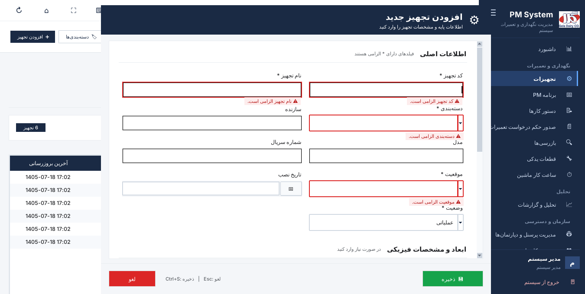
فرم افزودن تجهیز با فیلدهای لازمِ خالی
۳.۷ جستجوی سریع (Ctrl+K)
در هر صفحهای، کلید Ctrl+K کادر جستجوی سریع را باز میکند:
نام هر صفحه را تایپ کنید تا مستقیم به آن بروید.
کد یا نام یک تجهیز را تایپ کنید تا صفحه تجهیزات با همان جستجو باز شود.
یک عدد، مثلاً ۳۳، تایپ کنید تا «دستور کار شماره ۳۳» پیدا و انتخاب شود.
کارهای سریع، مثل «ثبت دستور کار جدید»، «افزودن تجهیز» و «میانبرهای صفحهکلید»، هم در این کادر هستند.
با کلیدهای ↑ و ↓ بین نتیجهها حرکت کنید. Enter نتیجه را باز میکند و Esc کادر را میبندد. جستجو با حروف فارسی و عربی (ی/ي و ک/ك) و اعداد فارسی و انگلیسی کار میکند.
جستجوی سریع
۴. نقشها و سطح دسترسی
هر کاربر یک نقش دارد و نقش تعیین میکند کدام صفحهها را ببیند و چه کارهایی بتواند انجام دهد. چهار نقش پیشفرض وجود دارد. مدیر سیستم میتواند نقشهای سفارشی هم بسازد (بخش ۵.۱۱).
کارهای قابل تعیین برای هر صفحه: مشاهده، ایجاد / ویرایش، تأیید (فقط در دستور کارها) و حذف.
صفحه
مدیر سیستم
مدیر
تکنسین
کارشناس تولید
داشبورد
کامل
مشاهده
مشاهده
مشاهده
تجهیزات
کامل
مشاهده، ثبت/ویرایش، حذف
مشاهده، ثبت/ویرایش
مشاهده
برنامه PM
کامل
مشاهده، ثبت/ویرایش، حذف
—
—
دستور کارها
کامل
کامل (با تأیید)
مشاهده، ثبت/ویرایش
مشاهده، ثبت/ویرایش، تأیید ایجاد
حکم درخواست تعمیرات
کامل
مشاهده، ثبت/ویرایش، حذف
مشاهده، ثبت/ویرایش
مشاهده، ثبت/ویرایش
پرسنل و دپارتمانها
کامل
مشاهده، ثبت/ویرایش، حذف
—
—
بازرسیها
کامل
مشاهده، ثبت/ویرایش، حذف
مشاهده
—
قطعات یدکی
کامل
مشاهده، ثبت/ویرایش، حذف
مشاهده، ثبت/ویرایش، حذف
—
تحلیل و گزارشات
کامل
مشاهده
مشاهده
—
ساعت کار ماشین
کامل
مشاهده، ثبت/ویرایش، حذف
مشاهده، ثبت/ویرایش
—
مدیریت کاربران
کامل
—
—
—
لاگ فعالیت
کامل
—
—
—
تأیید در دستور کارها این کارها را شامل میشود: تأیید ایجاد دستور کار، تأیید نهایی، رد اتمام کار و «تولید PM». ویرایش و تغییر وضعیت دستور کار برای همه نقشهایی که صفحه دستور کارها را میبینند آزاد است. کارشناس تولید فقط تأیید ایجاد را انجام میدهد. تأیید نهایی و رد اتمام کار با مدیر است. حذف در صفحه تجهیزات اجازه مدیریت فهرست دستهبندیها و موقعیتها را هم میدهد.
۵. راهنمای صفحهها
۵.۱ داشبورد
اولین صفحه پس از ورود است و وضعیت کلی واحد نت را نشان میدهد:
شاخصهای کلیدی نگهداری: انطباق PM، نرخ تکمیل، تعداد کارهای تکمیلشده، کل دستور کارها، تعداد تجهیزات و قطعات کمموجود، دستور کارهای اضطراری، PMهای معوق و دستور کارهای باز.
تمرکز عملیاتی: مواردی که بهتر است اول روز بررسی شوند، مثل قطعات کمموجود، کارهای اضطراری ثبتشده، PMهای معوق و کارهای باز.
دکمه بروزرسانی اطلاعات را دوباره از سرور میگیرد. زمان آخرین بروزرسانی کنار آن نوشته شده است.
۵.۲ تجهیزات
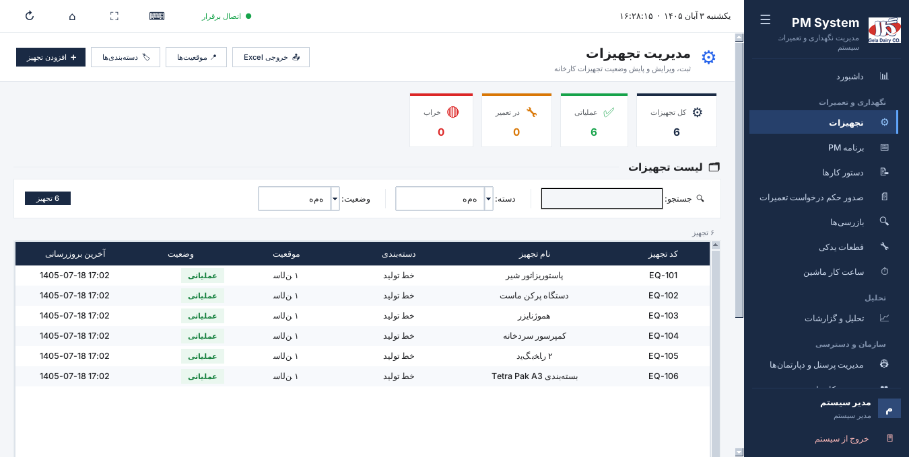
صفحه تجهیزات
کارتهای بالای صفحه تعداد کل تجهیزات و تعداد تجهیزات عملیاتی، در تعمیر و خراب را نشان میدهند.
جستجو و فیلتر: جستجو بر اساس کد یا نام، و فیلتر بر اساس دسته و وضعیت.
افزودن تجهیز: کد، نام، دستهبندی، موقعیت و وضعیت لازم هستند. سازنده، مدل، شماره سریال، تاریخ نصب و ابعاد و مشخصات فیزیکی اختیاریاند. دسته و موقعیت از فهرست انتخاب میشوند.
ویرایش، تغییر وضعیت و حذف: از کلیک راست روی ردیف، یا کلیدهای F2 و Delete.
دستهبندیها و موقعیتها: برای افزودن، تغییر نام یا حذف موارد این دو فهرست.
خروجی Excel از فهرست تجهیزات.
۵.۳ برنامه PM (نگهداری پیشگیرانه)
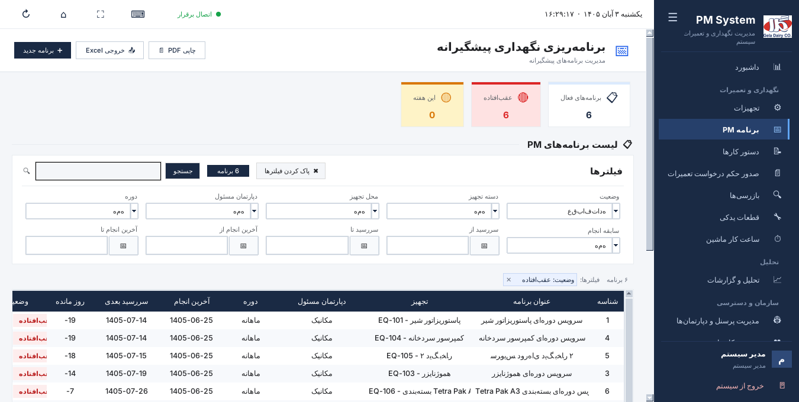
برنامههای PM با فیلتر وضعیت «عقبافتاده»
برنامه جدید: عنوان، تجهیز، دپارتمان مسئول، دوره تناوب (روزانه، هفتگی، ماهانه و …) و بازه به روز، تاریخ اولین سررسید، مدت مجاز انجام، چکلیست، قطعات مورد نیاز و یادداشت.
وضعیت هر برنامه:عقبافتاده (سررسید گذشته)،
این هفته،
بهموقع و
غیرفعال. ستون «روز مانده» فاصله تا سررسید را نشان میدهد و عدد منفی یعنی تأخیر.
فیلترها: وضعیت، دسته تجهیز، محل تجهیز، دپارتمان مسئول، دوره، سابقه انجام، بازه سررسید و بازه آخرین انجام، بههمراه جستجو.
کلیک راست: ویرایش، مشاهده دستور کار، فعال/غیرفعال و حذف.
PDF چاپی برای برگه کار تکنسینها، به همان ترتیب جدول و همراه با فیلترهای فعال، و خروجی Excel.
دستور کار خودکار: سیستم برای برنامههای فعالی که سررسیدشان رسیده، دستور کار با عنوان «[A-PM] نام برنامه و تاریخ شمسی» میسازد. این دستور کارها در وضعیت «در انتظار تأیید» ثبت میشوند. پس از تأیید نهایی دستور کار، تاریخ سررسید بعدی برنامه خودکار جلو میرود.
۵.۴ دستور کارها
اصلیترین صفحه برنامه است. هر دستور کار این مراحل را طی میکند:
در انتظار تأیید←در انتظار←در حال انجام←درخواست اتمام←تأیید شدهیارد شده
کار
توضیح
چه کسی
➕ دستور کار
ثبت کار جدید: عنوان، تجهیز، دپارتمان مسئول، نوع (اصلاحی، پیشگیرانه، بازرسی)، اولویت، ساعت اعلام خرابی، تاریخ و ساعت برنامهریزی، سررسید و توضیحات.
نقشهای دارای «ثبت»
🚨 اضطراری
ثبت سریع خرابی ناگهانی (EM) با اولویت فوری.
نقشهای دارای «ثبت»
👍 تأیید ایجاد
دستور کار «در انتظار تأیید» به «در انتظار» میرود و آماده شروع میشود.
مدیر، کارشناس تولید
▶️ شروع کار
ثبت زمان شروع. وضعیت «در حال انجام» میشود.
نقشهای دارای «ثبت»
📤 ارسال گزارش اتمام
ثبت زمان پایان، پرسنل انجامدهنده از دپارتمان مسئول، قطعات مصرفی (از انبار کم میشوند) و هزینه دستی. وضعیت «درخواست اتمام» میشود.
نقشهای دارای «ثبت»
✅ تأیید نهایی
بستن کار. اگر کار از برنامه PM آمده باشد، سررسید بعدی برنامه تنظیم میشود.
مدیر
❌ رد اتمام
با نوشتن دلیل. برای ادامه کار یک دستور کار اصلاحی جدید ساخته میشود که به کار قبلی پیوند دارد (ستون «والد»).
مدیر
✏️ ویرایش
تغییر اطلاعات دستور کار (عنوان، تجهیز، دپارتمان، نوع، اولویت، تاریخها، توضیحات و در مرحله اتمام، پرسنل انجامدهنده).
همه نقشها
🔁 تغییر وضعیت
برگرداندن کار به یکی از مراحل قبل، با ثبت دلیل. کارهای «تأیید شده» و «رد شده» برنمیگردند.
همه نقشها
🔄 تولید PM
ساخت فوری دستور کار برای برنامههای PM که سررسیدشان رسیده است. موارد تکراری ساخته نمیشوند.
مدیر
🗑️ حذف
حذف دستور کار، پس از تأیید.
نقشهای دارای «حذف»
فیلترها: وضعیت، دپارتمان، دسته تجهیز، جستجو (شماره، عنوان، تجهیز، پرسنل و …) و بازه تاریخ. پس از تغییر فیلترها «اعمال فیلتر» را بزنید.
۵.۵ صدور حکم درخواست تعمیرات
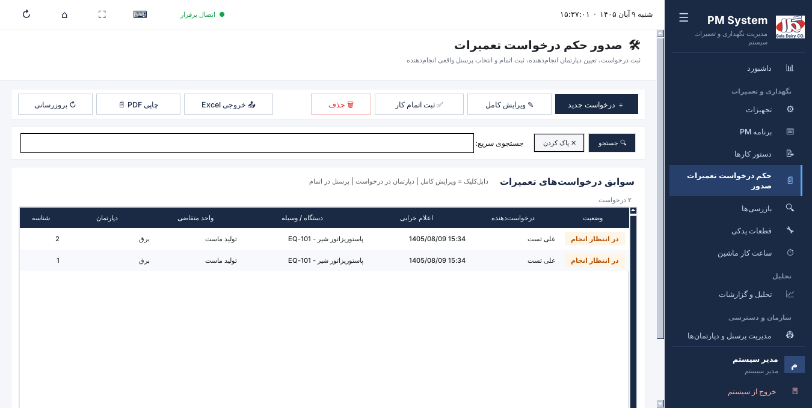
صفحه درخواستهای تعمیرات
ثبت درخواست: دکمه ＋ درخواست جدید (یا Ctrl+N) پنجره «ثبت درخواست تعمیرات جدید» را باز میکند. واحد متقاضی، دستگاه یا وسیله، دپارتمان انجامدهنده، نام درخواستدهنده، اپراتور، تاریخ و ساعت اعلام خرابی و شرح درخواست را وارد کنید و «ثبت درخواست» یا Ctrl+S را بزنید. تاریخ و ساعت بهصورت پیشفرض «اکنون» است. در این مرحله فقط دپارتمان انتخاب میشود. درخواست تازهثبتشده در جدول انتخاب میشود.
ثبت اتمام کار: درخواست را در جدول انتخاب کنید و «ثبت اتمام کار» را بزنید. تاریخ و ساعت اتمام، هزینه دستی، تأخیر و پرسنل انجامدهنده را وارد کنید. فقط پرسنل همان دپارتمان در فهرست هستند.
ویرایش کامل: با دابلکلیک روی ردیف، همه اطلاعات درخواست و اتمام آن قابل ویرایش است.
چاپ: «PDF چاپی» فهرستی برای انتخاب یک یا چند درخواست باز میکند.
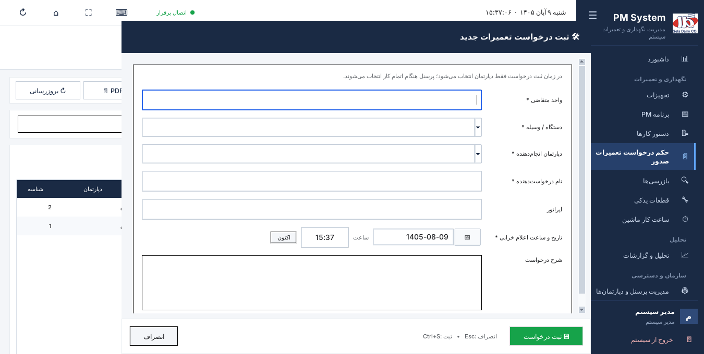
پنجره ثبت درخواست تعمیرات جدید
۵.۶ بازرسیها
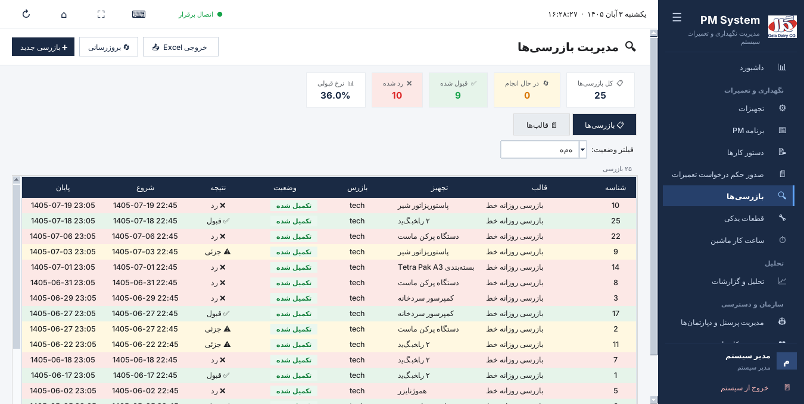
بازرسیها: کارتهای آمار، جدول بازرسیها و نتیجه هر کدام
قالبها: هر قالب نام، دوره، مدت تقریبی و فهرست چکپوینتها دارد. قالبها را میتوان فعال یا غیرفعال کرد.
بازرسی جدید: قالب و تجهیز را انتخاب کنید و برای هر چکپوینت نتیجه و توضیح بنویسید. نتیجه کلی بازرسی قبول، رد یا جزئی است.
کلیک راست روی بازرسی: ادامه بازرسی نیمهکاره، مشاهده جزئیات و حذف.
فیلتر وضعیت (در حال انجام، تکمیل شده، لغو شده) و خروجی Excel.
۵.۷ قطعات یدکی
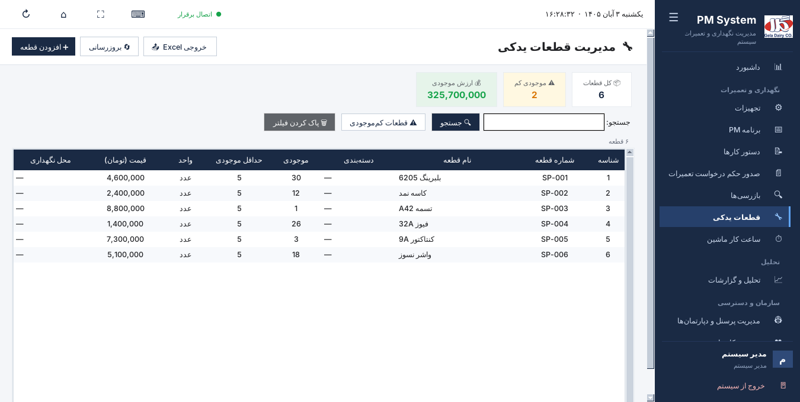
انبار قطعات یدکی
کارتهای بالا: تعداد کل قطعات، تعداد قطعات کمموجود و ارزش کل موجودی (تومان).
افزودن قطعه: شماره قطعه و نام لازم هستند. دستهبندی، موجودی، حداقل موجودی، واحد، قیمت واحد و محل نگهداری اختیاریاند.
کلیک راست: ورود به انبار، خروج از انبار (با تعداد، مرجع و توضیح)، مشاهده تاریخچه تراکنشها، ویرایش و حذف.
دکمه «قطعات کمموجودی» فقط قطعاتی را نشان میدهد که موجودیشان به حداقل رسیده است.
قطعاتی که در گزارش اتمام دستور کار مصرف میشوند، خودکار از موجودی کم میشوند.
۵.۸ ساعت کار ماشین
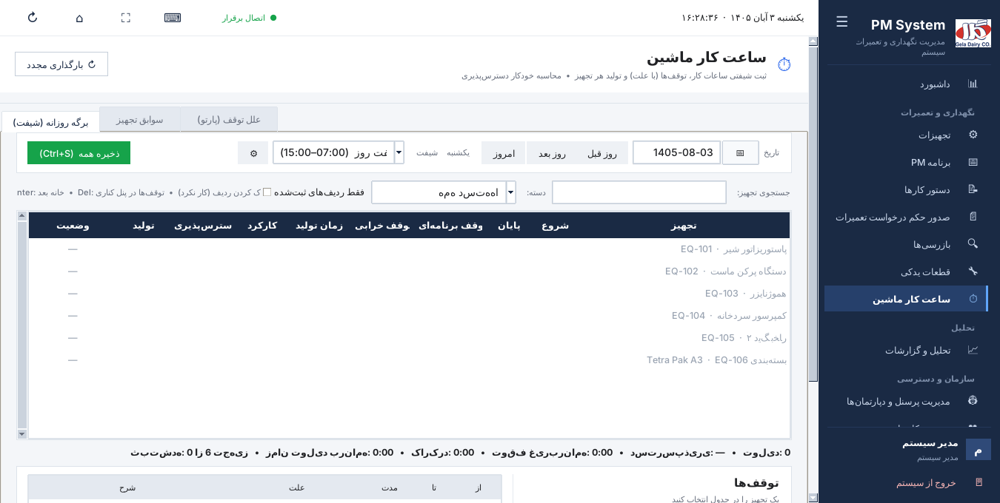
برگه روزانه شیفت
برگه روزانه (شیفت): تاریخ و شیفت را انتخاب کنید. برای هر تجهیز زمان شروع و پایان کار و میزان تولید را بنویسید. توقفها را با ساعت «از» و «تا» و علت در پنل کناری ثبت کنید. زمان تولید، کارکرد و دسترسپذیری خودکار محاسبه میشوند.
توقفهای آبی (شستشو، نت، استراحت، بدون برنامه) توقف برنامهریزیشده هستند و از «زمان تولید» کم میشوند. بقیه توقفها خرابی حساب میشوند.
Enter به خانه بعد میرود و Delete ردیف دستگاهی را که کار نکرده پاک میکند. «ذخیره همه» یا Ctrl+S همه ردیفها را ذخیره میکند. اگر پیش از ذخیره صفحه را عوض کنید، برنامه هشدار میدهد.
سوابق تجهیز: جمع روزانه هر دستگاه با شاخصها و خروجی Excel. علل توقف (پارتو): مهمترین علتهای توقف در یک بازه.
۵.۹ تحلیل و گزارشات
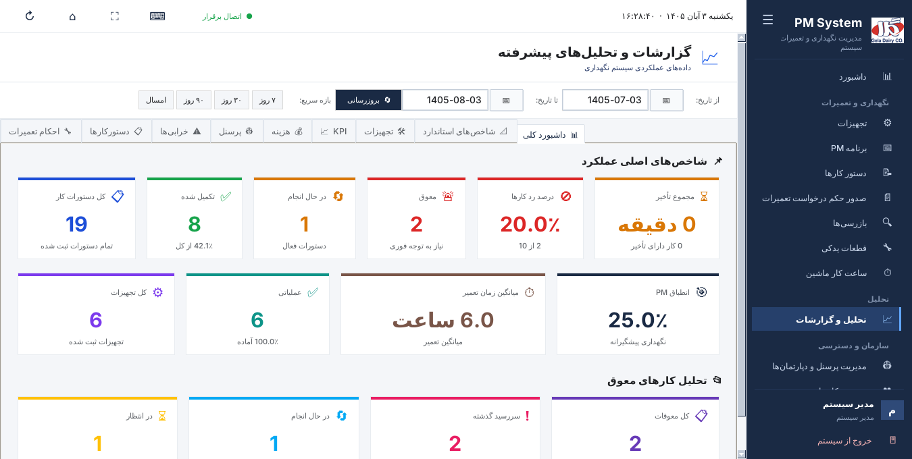
گزارشات: بازه تاریخ، بازههای سریع و زبانهها
بازه گزارش: تاریخ شروع و پایان را انتخاب کنید یا یکی از بازههای سریع (۷، ۳۰ و ۹۰ روز اخیر، امسال) را بزنید. تاریخ شروع نباید از تاریخ پایان بعدتر باشد.
زبانهها: داشبورد کلی، شاخصهای استاندارد (MTBF، MTTR، دسترسپذیری و …)، تجهیزات، KPI، هزینه، پرسنل، خرابیها، دستورکارها و احکام تعمیرات.
گزارش تجهیزات فیلترهای جستجو، دسته، محل، وضعیت، «دارای دستور کار» و «دارای ساعت کار» دارد و خلاصه تعداد را بالای جدول نشان میدهد.
هر زبانه خروجی Excel دارد. زبانههای دستورکارها و احکام تعمیرات خروجی PDF هم دارند.
۵.۱۰ مدیریت پرسنل و دپارتمانها
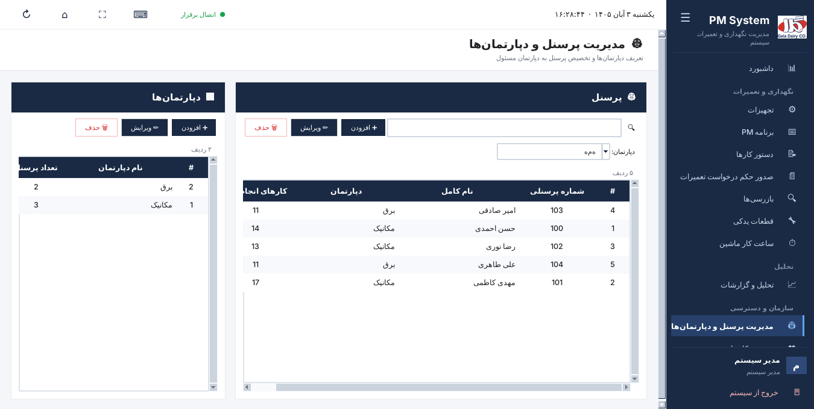
دپارتمانها (چپ) و پرسنل (راست)
دپارتمانها (مثل برق و مکانیک) و پرسنل هر دپارتمان با شماره پرسنلی در این صفحه تعریف میشوند. ستون «کارهای انجامشده» تعداد کارهای ثبتشده برای هر نفر را نشان میدهد. پرسنل در گزارش اتمام دستور کار و حکم تعمیرات، از دپارتمان مسئول همان کار انتخاب میشوند.
۵.۱۱ مدیریت کاربران و نقشها
این صفحه فقط برای مدیر سیستم است: افزودن کاربر (نام کاربری، نام کامل، شماره پرسنلی، واحد خدمت، نقش و رمز عبور)، ویرایش، فعال/غیرفعال کردن و حذف.
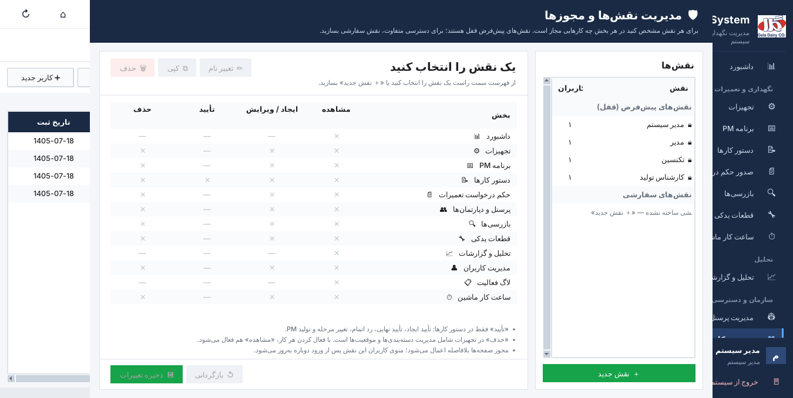
پنجره مدیریت نقشها و مجوزها
دکمه مدیریت نقشها پنجره نقشها را باز میکند. نقشهای پیشفرض فقط نمایش داده میشوند و قابل تغییر نیستند.
نقش جدید: نام نقش را بنویسید و در صورت نیاز مجوزها را از یک نقش موجود کپی کنید. سپس در جدول مجوزها برای هر صفحه مشاهده، ایجاد/ویرایش، تأیید و حذف را تعیین کنید و «ذخیره» را بزنید. خانههایی که «—» دارند برای آن صفحه معنی ندارند.
مدیریت کاربران هرگز به نقش سفارشی داده نمیشود.
برای حذف نقشی که کاربر دارد، باید نقش جایگزین کاربرانش را انتخاب کنید.
تغییر مجوزها از ورود بعدی کاربر اعمال میشود.
۵.۱۲ لاگ فعالیت
همه کارهای مهم (ایجاد، ویرایش، حذف، تأیید و تغییر نقش) با زمان، کاربر، نوع موجودیت و جزئیات ثبت میشوند. فیلتر بر اساس کاربر و نوع موجودیت ممکن است. این صفحه فقط برای مدیر سیستم است.
۶. فرایندهای متداول گامبهگام
خرابی دستگاه و تعمیر آن
در «دستور کارها» دکمه اضطراری (برای خرابی فوری) یا دستور کار را بزنید، تجهیز و دپارتمان مسئول را انتخاب کنید و ذخیره کنید.
در صورت نیاز، مدیر یا کارشناس تولید «تأیید ایجاد» را انجام میدهد.
تکنسین با کلیک راست، شروع کار را میزند و زمان شروع را ثبت میکند.
پس از تعمیر، ارسال گزارش اتمام: زمان پایان، پرسنل انجامدهنده، قطعات مصرفی و هزینه دستی.
مدیر کار را بررسی میکند و تأیید نهایی یا رد اتمام را میزند. با رد اتمام، یک کار جدید برای ادامه ساخته میشود.
تعریف و اجرای PM
در «برنامه PM» دکمه برنامه جدید را بزنید و دوره، اولین سررسید و چکلیست را وارد کنید.
در زمان سررسید، دستور کار «[A-PM] …» خودکار ساخته میشود. «تولید PM» همین کار را فوری انجام میدهد.
کار را مانند بالا تأیید ایجاد، شروع و اتمام کنید. با تأیید نهایی، سررسید بعدی برنامه تعیین میشود.
برای برگه چاپی کار تکنسینها، در «برنامه PM» دکمه PDF چاپی را بزنید.
درخواست تعمیرات از واحدهای دیگر
در «صدور حکم درخواست تعمیرات» دکمه درخواست جدید را بزنید، فرم پنجره را پر کنید و دپارتمان انجامدهنده را انتخاب کنید.
پس از انجام کار، ثبت اتمام کار را بزنید و پرسنل انجامدهنده و هزینه را وارد کنید.
ورود قطعه به انبار
در «قطعات یدکی» روی قطعه کلیک راست کنید و ورود به انبار را بزنید.
تعداد، قیمت واحد، مرجع (مثلاً شماره فاکتور) و توضیح را وارد کنید.
ثبت کار روزانه دستگاهها
در «ساعت کار ماشین» تاریخ و شیفت را انتخاب کنید.
برای هر دستگاه شروع، پایان و تولید را بنویسید و توقفها را با علت ثبت کنید.
Ctrl+S یا «ذخیره همه» را بزنید.
۷. خروجی PDF و Excel
PDF چاپی در دستور کارها، برنامه PM، حکم درخواست تعمیرات و زبانههای دستورکارها و احکام تعمیرات در گزارشات وجود دارد. پس از ساخت فایل، تعداد ردیفها و صفحهها نمایش داده میشود و فیلترهای فعال در خود PDF هم چاپ میشوند.
اگر فیلتری فعال باشد، فقط ردیفهای فیلترشده در خروجی میآیند و ترتیب همان ترتیب جدول است.
Excel در تجهیزات، دستور کارها، برنامه PM، قطعات، بازرسیها، ساعت کار ماشین و همه زبانههای گزارشات.
نام پیشفرض فایلها تاریخ و ساعت شمسی دارد، مثلاً WorkOrders_Print_14050803_161200.pdf.
۸. کلیدهای میانبر
میانبرها با صفحهکلید فارسی هم کار میکنند. F1 همین فهرست را در برنامه نمایش میدهد.
کلید
کار
Ctrl+K
جستجوی سریع: صفحه، تجهیز یا شماره دستور کار
Ctrl+N
ثبت مورد جدید در صفحه فعلی
Ctrl+E یا F2
ویرایش ردیف انتخابشده
Enter
باز کردن یا ویرایش ردیف انتخابشده
Delete
حذف ردیف انتخابشده (با تأیید)
Ctrl+F
رفتن به کادر جستجوی صفحه
Ctrl+R یا F5
بروزرسانی صفحه
Ctrl+P
چاپ یا PDF صفحه
Ctrl+S
ذخیره در فرمها و برگه ساعت کار
Ctrl+1 … Ctrl+9
رفتن به صفحههای منوی کناری به ترتیب
Esc
بستن پنجره یا خروج از تمامصفحه
F11
تمامصفحه
F1
راهنمای میانبرها
۹. عیبیابی و پرسشهای متداول
مشکل
راهحل
«خطا در اتصال به پایگاه داده» یا نقطه قرمز اتصال در نوار بالا
اتصال کامپیوتر به شبکه داخلی را بررسی کنید. اگر مشکل ادامه داشت، به واحد فناوری اطلاعات اطلاع دهید که سرور SQL Server در دسترس نیست.
صفحه یا دکمهای را نمیبینم
نقش شما اجازه آن را نمیدهد. از مدیر سیستم بخواهید نقش یا مجوزهای شما را بررسی کند. تغییرات از ورود بعدی اعمال میشوند.
«فقط کارهای در انتظار قابل شروع هستند»
دستور کار باید ابتدا «تأیید ایجاد» شود.
پرسنل مورد نظر در گزارش اتمام نیست
فقط پرسنل دپارتمان مسئول همان کار در فهرست هستند. دپارتمان کار یا دپارتمان آن شخص را در «مدیریت پرسنل» اصلاح کنید.
جدول خالی است
به برچسبهای فیلتر بالای جدول نگاه کنید و «پاک کردن فیلترها» را بزنید. در دستور کارها بازه تاریخ را هم بررسی کنید.
تجهیز حذف نمیشود
حذف تجهیز اجازه «حذف» در صفحه تجهیزات را میخواهد. سوابق وابسته پس از تأیید شما پاک میشوند. اگر میخواهید سوابق بمانند، وضعیت را «غیرفعال» کنید.
پیام شمارش معکوس بهروزرسانی
کار در دست را ذخیره کنید. برنامه نسخه جدید را نصب میکند و دوباره باز میشود.
پیام «بهروزرسانی خودکار انجام نشد»
به واحد فناوری اطلاعات اطلاع دهید. با میانبر «Test automatic updates» علت مشخص میشود.
پیوست: نکات واحد فناوری اطلاعات
انتشار نسخه جدید
نسخهها چهاربخشی هستند و هر انتشار فقط بخش آخر را یکی بالا میبرد، مثلاً 2.4.6.1 → 2.4.6.2. برای شروع سری جدید، شماره را در version.txt بنویسید.
release.bat برنامه را میسازد، نصبکننده را آماده میکند و روی \\192.168.0.1\PM_System_Updates قرار میدهد. فقط دو نسخه آخر روی سرور و در پوشه installer_output نگه داشته میشوند.
دستورالعمل کامل در فایل DEPLOY_UPDATES.md است.
بهروزرسانی روی کامپیوترها
تسک زمانبندیشده \GelaPM\PM System Updater با حساب SYSTEM اجرا میشود و نصب را بیصدا انجام میدهد. برنامه هم هنگام اجرا نسخه را بررسی میکند.
پس از هر نصب، آزمایش کامل بهروزرسانی با حساب SYSTEM اجرا میشود و نتیجه در صفحه آخر نصبکننده نمایش داده میشود.
میانبر Test automatic updates (اجرا با دسترسی مدیر): اطلاعات کامپیوتر، آزمایش کامل و یک اجرای واقعی تسک را انجام میدهد و گزارش را در last_test_report.txt ذخیره میکند.
ظاهر برنامه و گزارش خطا
اگر روی کامپیوتری مشکلی در نمایش پنجرهها یا جدولها دیده شد، با متغیر محیطی PM_CLASSIC_UI=1 پیامها و جدولها به ظاهر قبلی برمیگردند. منطق برنامه با این متغیر تغییر نمیکند.
خطاهای پیشبینینشده در فایل %LOCALAPPDATA%\GelaDairy\PMSystem\error.log ثبت میشوند. هنگام گزارش مشکل، این فایل را ضمیمه کنید.
امنیت: رمز عبور هیچ حسابی (مدیر سیستم، حساب انتشار یا سرور) در این راهنما یا در کد برنامه نوشته نمیشود. اگر رمز پیشفرض مدیر سیستم هنوز تغییر نکرده است، آن را تغییر دهید.